Assistente de Decupagem
Pré-edição e apoio pedagógico por IA
Cortar aula
Selecione as fontes e gere a primeira sequência de cortes.
Indicar letterings
Indique a sequência revisada pelo humano para encontrar os pontos que precisam de texto.
Aguardando...